SnapFit 템플릿 · 디자인 품질 보강
실제 Flutter 화면 렌더링. 테스트 계정과 샘플 사진이며 운영 권한·결제 검증은 포함하지 않습니다.
기존 무료 표지 5종 · 사진과 활자의 존재감
웨딩은 빛이 들어오는 정원과 버건디 저녁 무도로, 여행은 항구 사진과 우편형 프레임으로 나눴습니다. 일상 표지는 작은 타원 대신 라일락 색과 큰 사진으로 정리했습니다. 무료 가격과 기존 저장 앨범은 유지합니다.
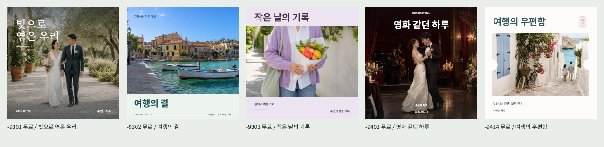
빛으로 엮은 우리 · 여행의 결 · 작은 날의 기록 · 영화 같던 하루 · 여행의 우편함
이전과 비교
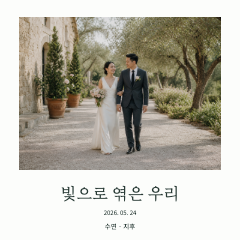
이전 · 빛으로 엮은 우리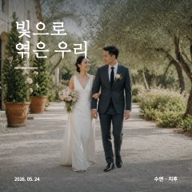
개편 · 사진형 웨딩
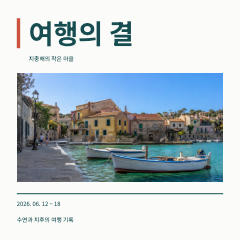
이전 · 여행의 결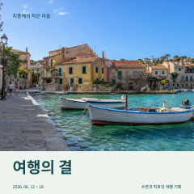
개편 · 항구와 기록
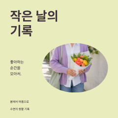
이전 · 작은 날의 기록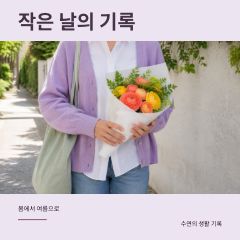
개편 · 라일락과 꽃다발
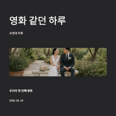
이전 · 영화 같던 하루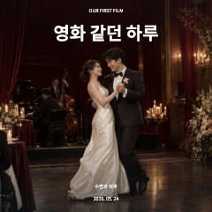
개편 · 저녁 무도
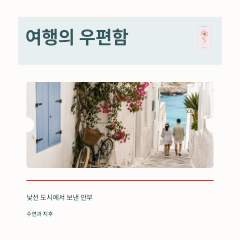
이전 · 여행의 우편함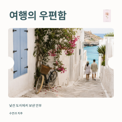
개편 · 큰 우편형 프레임
표지마다 다른 장면 · 무료 37종 / 유료 14종
표지의 주인공 사진과 작은 보조 사진까지 총 57장을 중복 없이 배정했습니다. 새 사진 8장으로 낮·밤, 실내·야외, 인물·사물, 흑백·색채를 넓히고 유료 14종의 문구 배치를 각각 다듬었습니다. 내지와 가격은 유지합니다.
정사각형 · 51종 전체 비교
세로형 · 51종
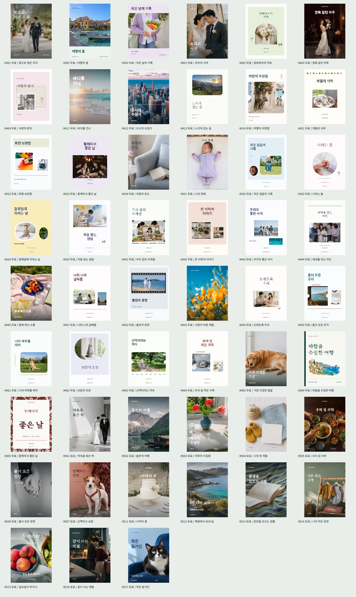
가로형 · 51종
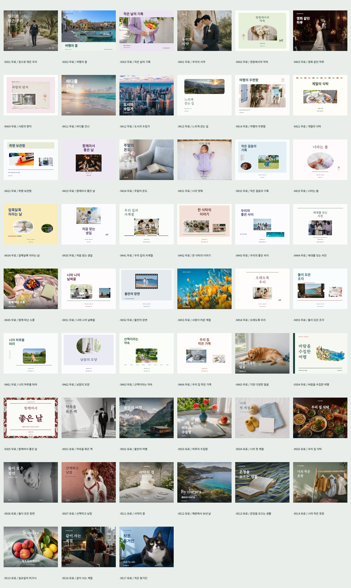
앱 목록용 미리보기 · 51종
실제 앱에서 스크롤 중 사용하는 미리보기입니다. 최신 표지를 직접 렌더링한 결과와 51종 모두 대조했습니다.
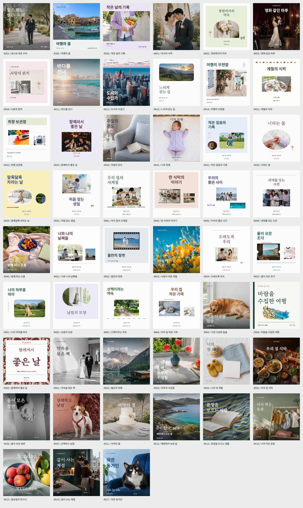
표지별 원본·미리보기 대조 결과
유료 표지 · 개별 보기
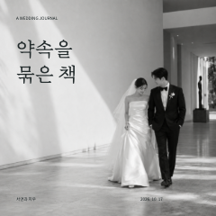
약속을 묶은 책 · 흑백 웨딩
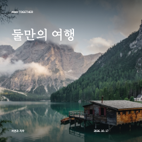
둘만의 여행 · 산과 호수
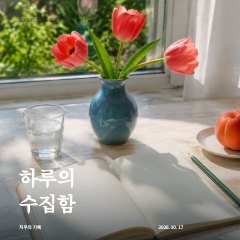
하루의 수집함 · 창가의 붉은 꽃
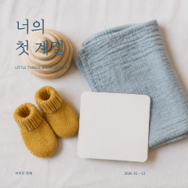
너의 첫 계절 · 작은 물건들
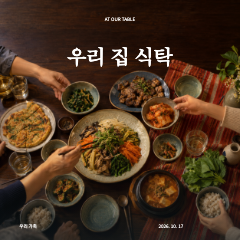
우리 집 식탁 · 가족의 저녁
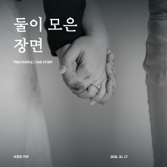
둘이 모은 장면 · 맞잡은 손
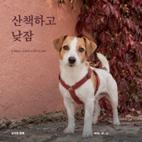
산책하고 낮잠 · 장밋빛 반려견 사진
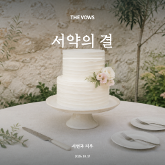
서약의 결 · 예식의 디테일
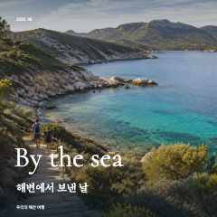
해변에서 보낸 날 · 해안선
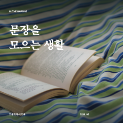
문장을 모으는 생활 · 줄무늬 천과 책
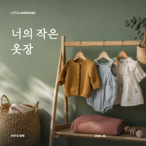
너의 작은 옷장 · 코튼과 니트
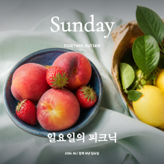
일요일의 피크닉 · 과일의 색
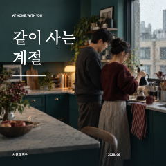
같이 사는 계절 · 비 오는 집
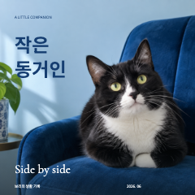
작은 동거인 · 코발트와 고양이
사진 제작 기록과 표지 품질 규칙
무료는 무료 소재만
무료 템플릿 37종·세 가지 규격을 검사했습니다. 무료 승인 소재 40종 중 28종을 사용하며, 유료 또는 미분류 소재가 들어오면 제작 검증에서 차단합니다. 기본 소재의 유료 가격 변경도 관리 화면에서 막습니다.
기존 유료 템플릿과 유료 소재 가격은 유지합니다. 운영 DB 적용은 아직 실행하지 않았습니다.
전체 규칙 · 무료 소재 검증 결과
알림과 테마
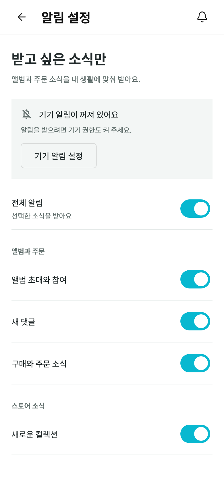
390px · 라이트
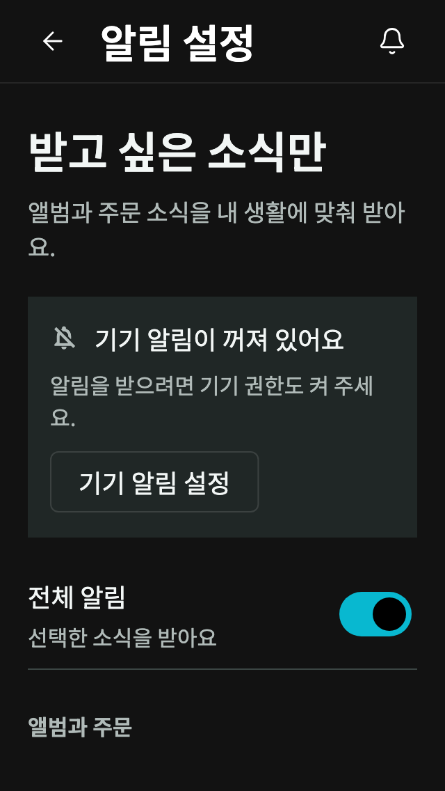
320px · 글자 130% · 다크
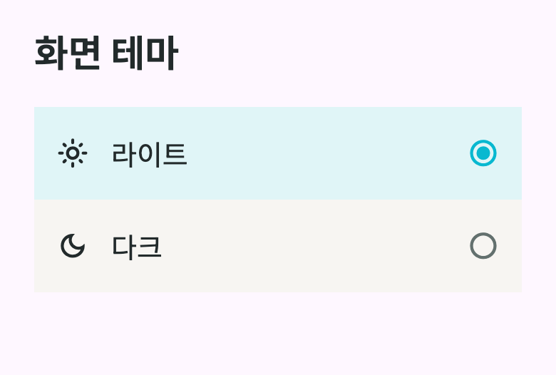
라이트·다크 선택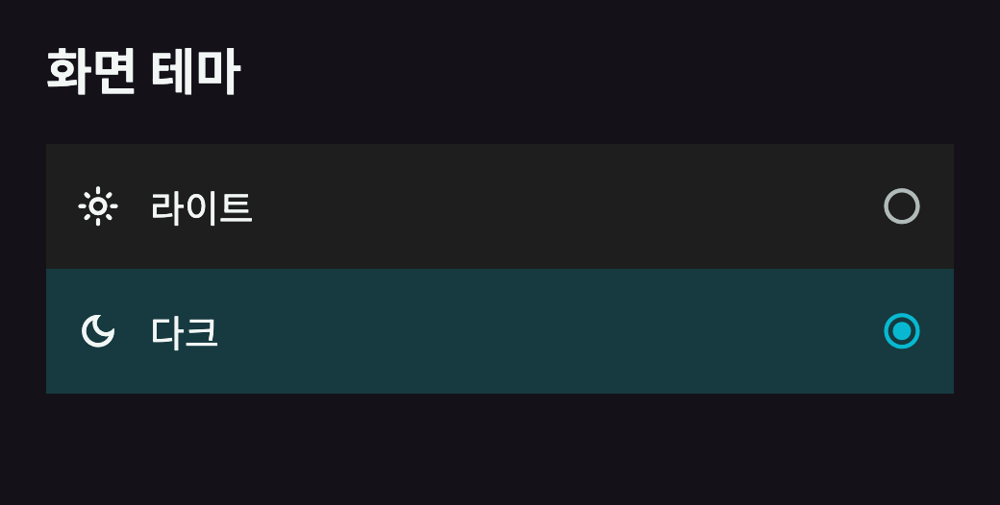
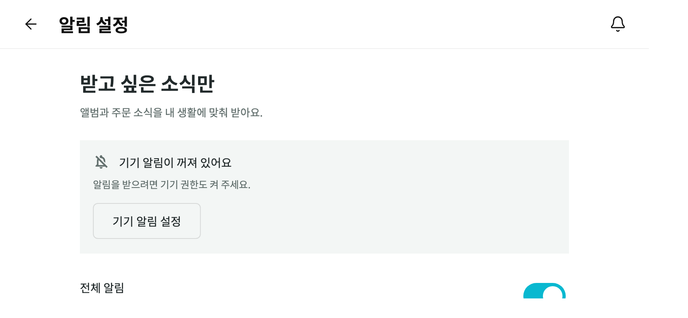
844px · 오른쪽 시스템 여백 반영
전체 알림 OFF 및 야간 설정
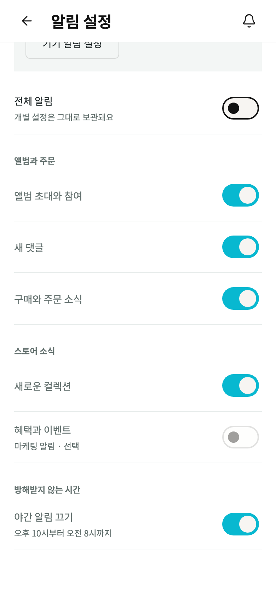
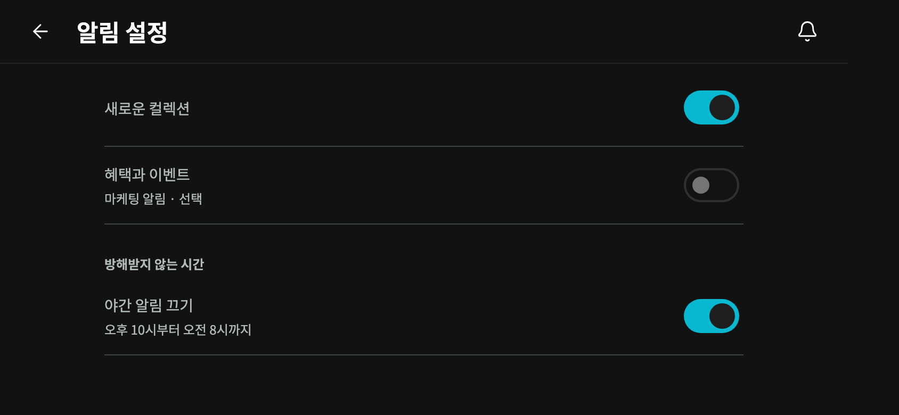
인쇄 주문 안내
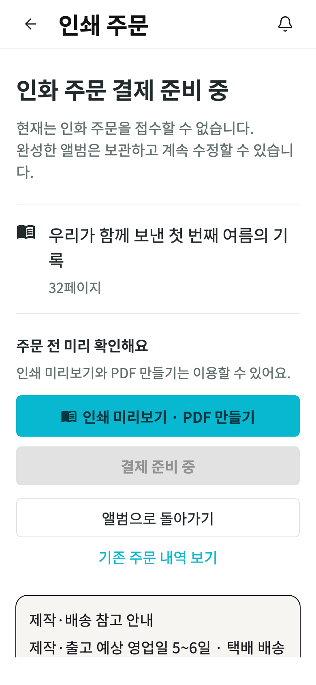
결제는 비활성화. 미리보기와 PDF는 이용 가능.
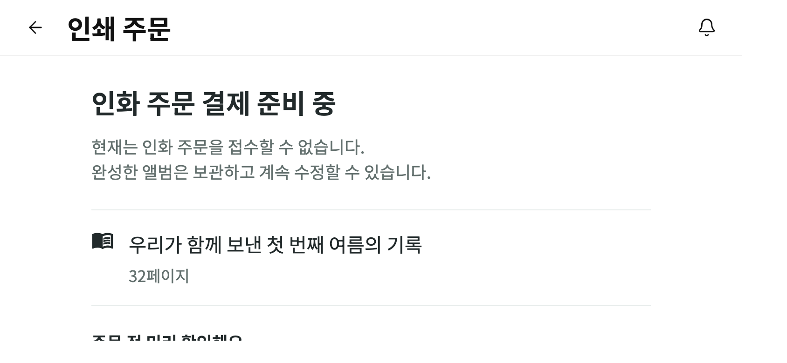
가로에서도 글자와 정보 크기 유지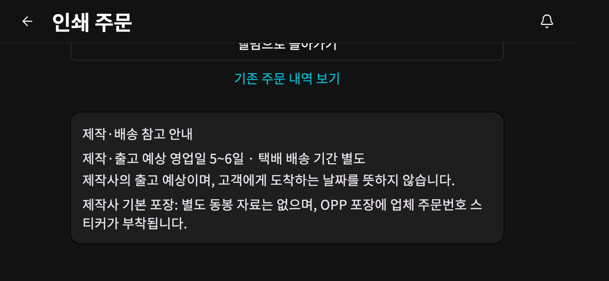